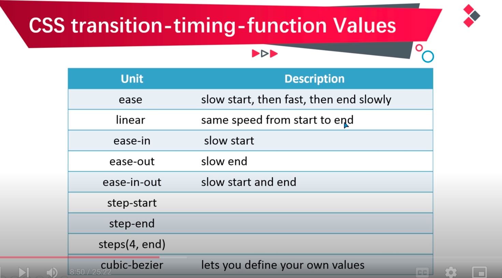

CSS3 Transition
Transition means smoothness for eg if you increase the width of div on hover so it will
allow you to do it slowly instead of in one fraction of time.
- transition
- transition-property ->on width,color,height etc.
- transition-duration -> animation time
- transition-delay -> start animation after how much time
- transition-timing-function ->
